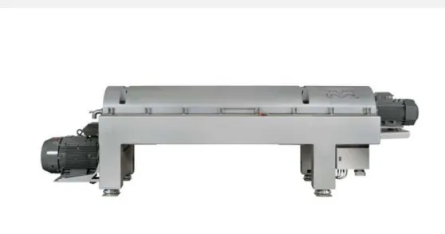

Engineered for cost-effective, high-performance separation of erosive, corrosive, and high-temperature slurries. Reliable operation for the chemical, pulp, and mineral sectors.
The Alfa Laval P2 series decanter centrifuges are specifically designed for the most demanding process environments found in the chemical, mineral processing, and industrial sectors. Capable of handling aggressive, corrosive, and high-temperature slurries, the P2 range provides exceptional durability and high product recovery for 2-phase or 3-phase separation duties.
With advanced wear protection and high-quality materials, the P2 series offers high capacity within a small footprint, minimizing installation costs and operational downtime even in abrasive processing environments.

Designed for high solids capture and cake dryness, maximizing product recovery while minimizing waste volumes.
Features customizable wear and corrosion protection including tungsten carbide tiles in critical feed and discharge zones.
High capacity operation without the need for filter cloths or vacuum pumps, leading to low long-term life-cycle costs.
Managing your plant's byproduct output:
Ensure the longevity and efficiency of your separation processes. Talk to our application engineers at Brigantine about sizing a P2 decanter.